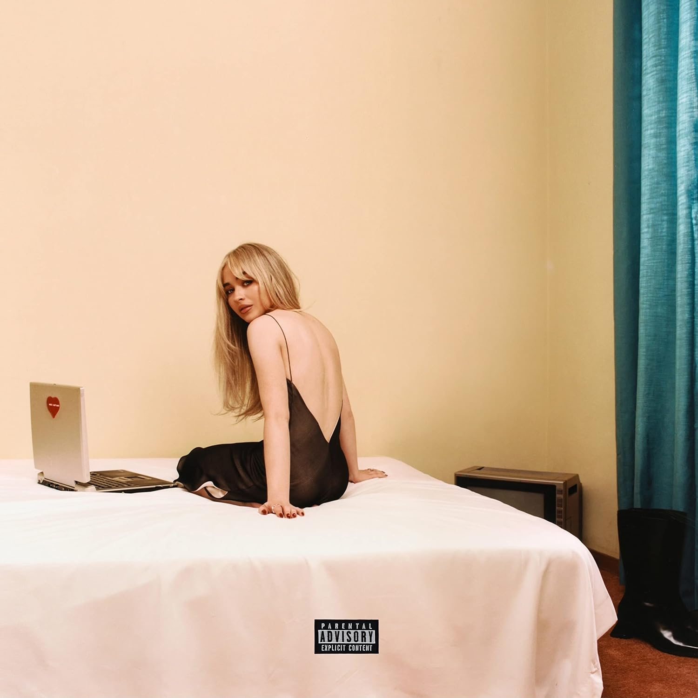
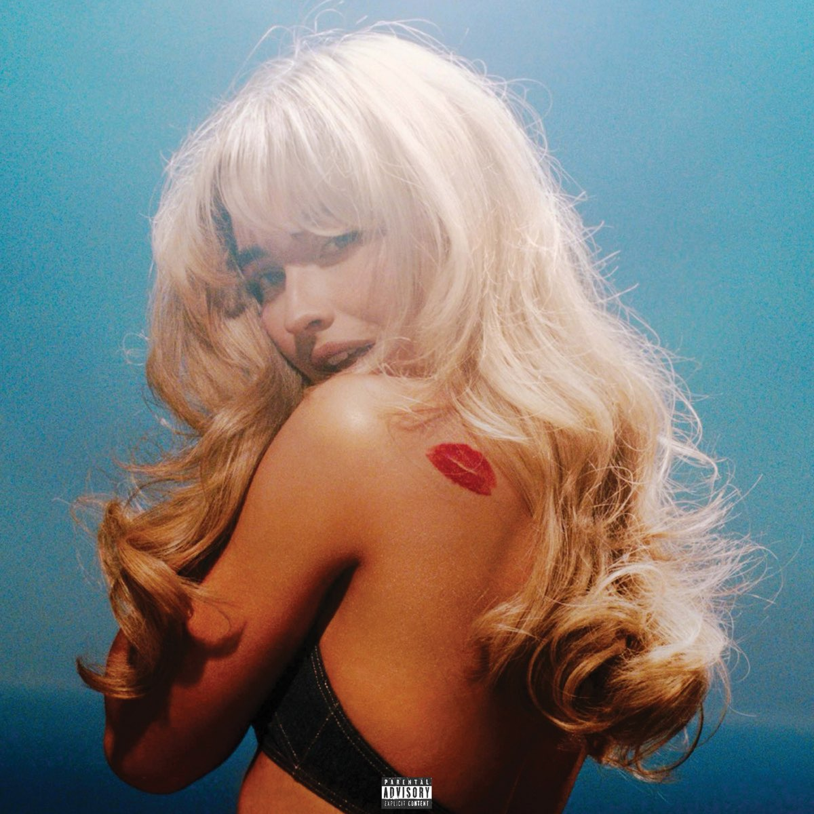
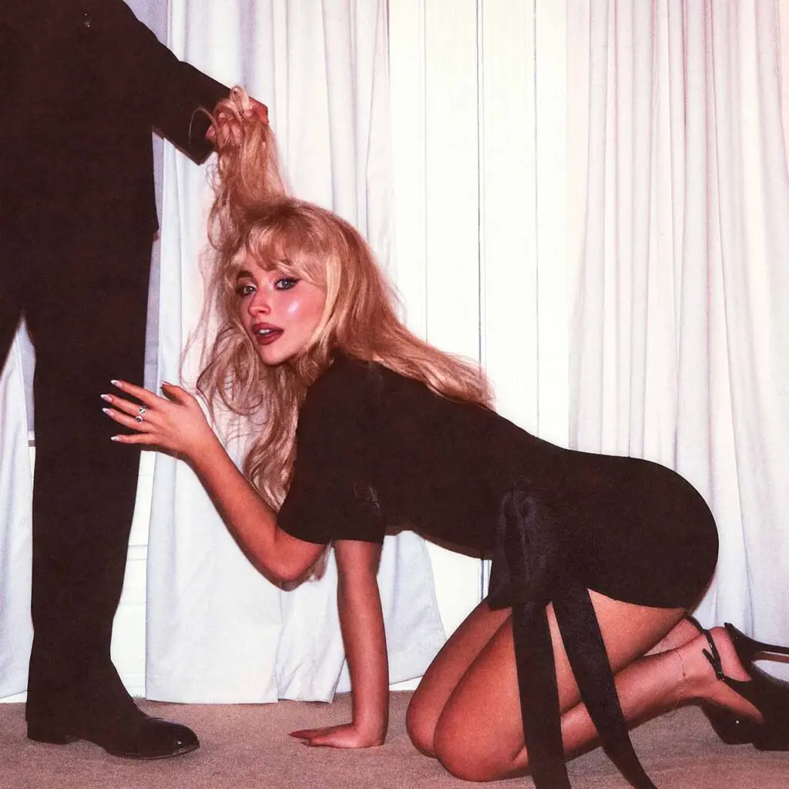

Listos para el House Tour?
Conoce todo sobre la actriz y cantante Sabrina Carpenter, desde su discografia hasta sus premios.

Conoce todo sobre la actriz y cantante Sabrina Carpenter, desde su discografia hasta sus premios.
Esta revista digital está echa con el proposito de dar a conocer de mejor manera la historia de Sabrina Carpenter, quizas muchos la conozcan por sus canciones más recientes, pero realmente ella lleva mucho tiempo tratando de darse a conocer, te invito a quedarte si te interesa saber como llegó hasta donde está, que hizo cuando su vida se vio envuelta en drama y odio, y como se ha vuelto una de las artistas pop más conocidas en la actualidad.

Actualmente Sabrina Carpenter es una cantante muy conocida, pero no llegó hasta donde está de la noche a la mañana, así empezó su vida.
Sabrina Annlynn Carpenter, nacida el 11 de mayo de 1999 en Quakertown, Pensilvania, es una cantante, compositora y actriz estadounidense que ha logrado consolidarse como una de las figuras más prominentes y magnéticas del pop contemporáneo. Su camino hacia el estrellato comenzó desde muy temprana edad, destacando inicialmente como una estrella infantil en Disney Channel al interpretar a la carismática Maya Hart en la exitosa serie Girl Meets World (2014-2017). Aunque su faceta como actriz le otorgó una base de fans sólida, fue su innegable talento vocal y su capacidad para escribir letras vulnerables lo que la llevó a buscar una identidad propia dentro de la industria musical, alejándose de la imagen prefabricada de los estudios de televisión para abrazar un estilo mucho más personal, audaz y lleno de un humor sarcástico muy característico.

Tras varios años de evolución bajo el sello Hollywood Records, la carrera de Sabrina alcanzó un punto de inflexión definitivo en 2022 con el lanzamiento de su quinto álbum de estudio, "Emails I Can't Send". Este proyecto no solo fue aclamado por la crítica por su honestidad emocional al abordar temas como el desamor y el escrutinio público, sino que también le permitió conectar con una audiencia global a través de hits virales como "Nonsense" y "Feather". Su ascenso meteórico continuó en 2024, año en el que dominó las listas de popularidad de Billboard y plataformas como Spotify con los sencillos "Espresso" y "Please Please Please", convirtiéndose en la banda sonora oficial del verano a nivel mundial. Además de su éxito en solitario, su relevancia en la cultura pop se reforzó al ser elegida por Taylor Swift como la telonera principal para las etapas de Latinoamérica, Australia y Singapur del monumental "The Eras Tour".

Más allá de sus logros en las listas de éxitos, Sabrina Carpenter se ha convertido en un ícono de estilo y de la "Gen Z" gracias a su estética visual, que rinde homenaje al glamour clásico de los años 60 y 70 con un toque moderno. Es reconocida no solo por su voz dulce y sus rangos vocales precisos, sino también por su ingenio y presencia escénica, elementos que utiliza para burlarse de sí misma y de las situaciones románticas más caóticas. Con el lanzamiento de su álbum "Short n' Sweet", Sabrina ha demostrado ser una artista versátil que domina desde baladas acústicas hasta el synth-pop más pegajoso, asegurando su lugar como una de las herederas legítimas del trono del pop internacional.


Emails I Can't Send
El primer album libre de Sabrina, sin intervención de Disney.
Top 3
🎧 Nosense
Short n' Sweet
El album que despegó de forma exponencial su carrera musical, si ella ya estaba siendo reconocida, este album ayudó a ser lo que es hoy en dia.
Top 3
🎧 Espresso
Man's Best Friend
Su ultimo album y el que generó gran polemica por su portada, aun asi supo aprovechar el momento y sacarle provecho.
Top 3
🎧 ManchildAqui podras ponerte en contacto conmigo, solo rellena la información del formulario.